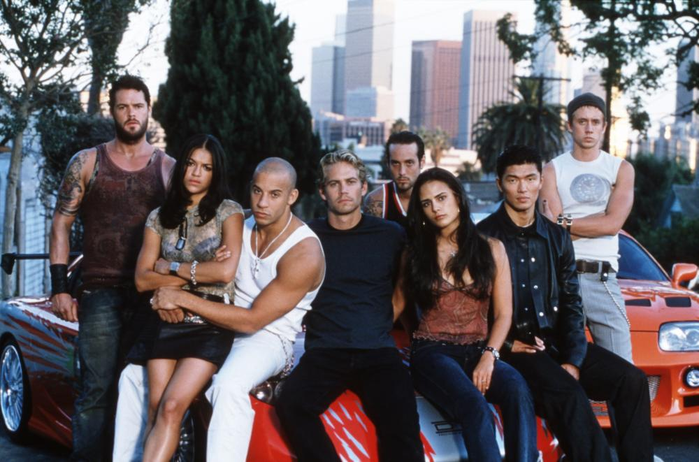

«Форсаж» (англ. The Fast and the Furious; — «Швидкі та Люті») — американська Медіафраншиза, що складається на даний момент з восьми повнометражних і двох короткометражних фільмів, випущених з 2001 по 2019. Є найбільш прибутковою франшизою студії Universal — загальні збори всіх частин складають 2,3 млрд доларів[1][2].
СЮЖЕТ ФРАНШИЗЫ
Форсаж представляет собой мегапопулярную кинофраншизу известную во всем мире и состоящую из девяти полнометражных картин. Более того, франшиза прославила актером Виня Дизеля и покойного ныне Пола Уокера.
Форсаж (2001 год) Все началось в далеком 2001 году с выходом первой части. Фильм знакомил зрителя с копом под прикрытием Брайаном О’Коннером пытающимся попасть в банду автомобилистов возглавляемую опытным и харизматичным автогонщиком Домиником Торетто.
Двойной форсаж (2003) Бывший полисмен Брайаном О’Коннер объединяется со старым товарищем, дабы перевезти крупную сумму долларов принадлежащих криминальному авторитету Картеру Вероне. Но, как выяснилось, после эта работа является еще одним прикрытием для стража закона, работающего со шпионкой Моникой Фуэнтес.
Тройной форсаж. Токийский дрифт (2006) Картина повествует о блистательном уличном гонщике Шоне Босуэлле раз за разом наживающем себе огромное количество врагов. В итоге от греха подальше парень отправляется в Японию даже, не догадываясь, что его ожидает впереди.
Форсаж 4 (2009) Фильм рассказывает о том, как Доминик и Брайан объединившись в одну команду пытаются противостоять известному и опасному наркобарону Артуру Браге.
Форсаж 5 (2011) Брайан и Доминик оказываются в Рио-де-Жанейро, где совершенно случайно перешли дорогу местному крупному бандиту в лице Эрнана Рейса.
Форсаж 6 (2013) Бравый агент Люк Хоббс обращается за помощью к Доминику и его бравым ребятам, дабы они помогли ему найти чрезвычайно опасный отряд, состоящий из водителей-наемников.
Форсаж 7 (2015) Фильм рассказывает о противостоянии Домника и его команды с опасным и мстительным персонажем в лице Деккарда Шоу.
Форсаж 8 (2017) Доминик едет отдыхать с любимой девушкой в Гавану, где бросает вызов местному автогонщику Фернандо являющемуся одним из лучших в гонках.